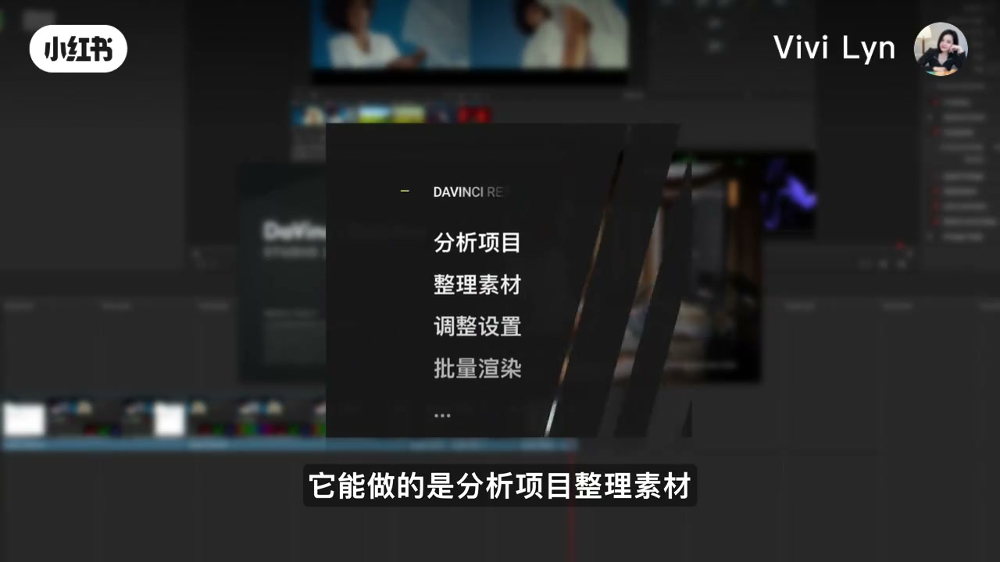
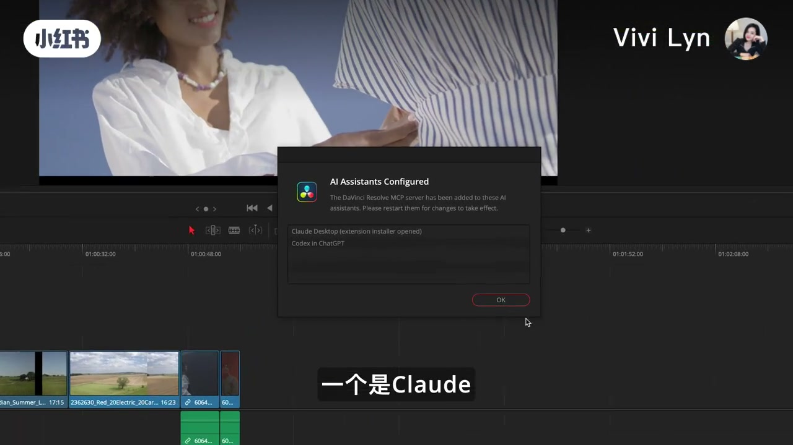
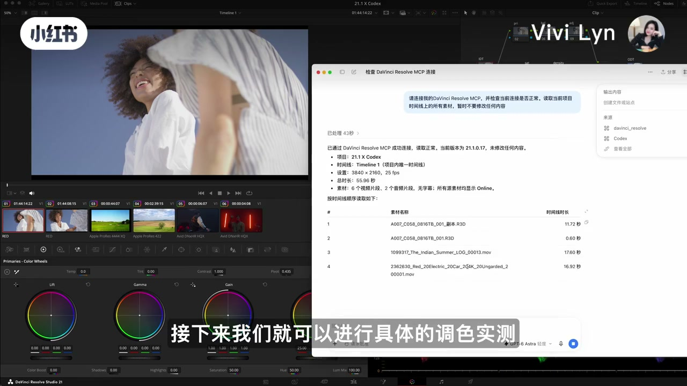
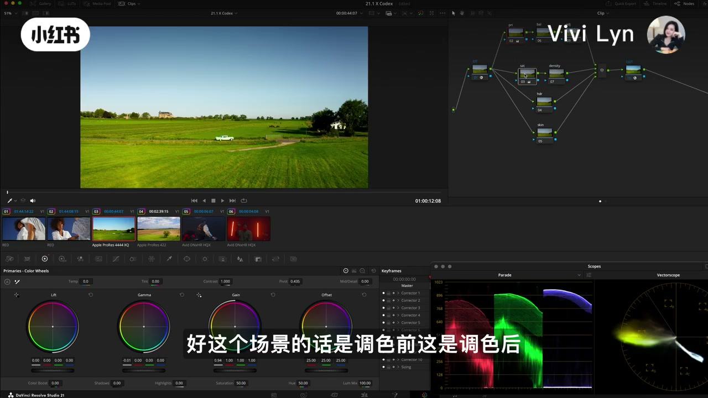
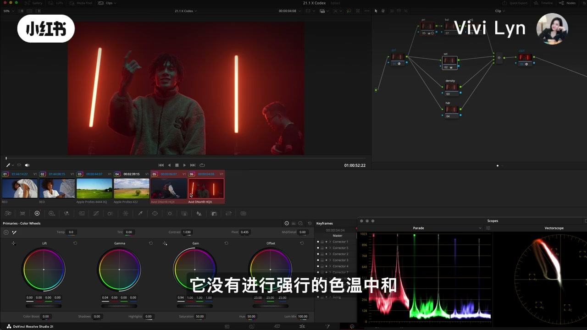
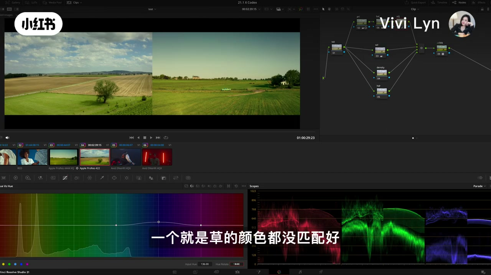

内容要点
这是一条屏幕实录。笔记标题写的是达芬奇 21.1 的 MCP 和 Codex 调色实测。Whisper 只在片头约 30 秒和 3 分 00 秒之后留下可用句子，中间两分半要看字幕。
知识结构
片头字幕说 21.1 正式版有重要更新，可以用 MCP 让 AI 直接操作达芬奇。画面把协议解释成让 AI 连接外部软件并执行操作，清单上写着分析项目、整理素材、调整设置、批量渲染。口播开头被听成乱码，和这组字幕对得上的是后半句「重复性的任务」。
File 菜单里点到 Setup AI Assistants。确认框写 MCP 服务已加到 Claude Desktop 和 Codex in ChatGPT。Codex 窗口按指令读项目：版本 21.1.0.17，项目名 21.1 X Codex，3840×2160、25fps、约 55.96 秒，6 条视频和 2 条音频，并写明未修改内容。这一段没有可靠口播。
字幕说让它在原有节点树上操作，并先看一级结果。草地镜头的字幕写成调色前和调色后。后面带创作色温和现场灯光的镜头，字幕明确写它没有强行做色温中和。作者后来说后面两个镜头的一级「不是那么好」，这句评价要和「没有强行中和」放在一起看。
指令要求把已经做了 Rec.709 还原的片段，在现有节点上向右边已调色版本做色彩匹配。字幕指出天空的蓝和肤色没对齐。3 分 00 秒后口播承认：提示很粗，结果仍有点出乎意料；同一画面分三次才做完。她说自己是 ChatGPT Plus 用户，中途还是会到上限，任务停住，要等五个小时的窗口刷新用量。
口播直接说第二个画面不太好，天空和草的颜色都没匹配好。片尾字幕补上她的判断：一级和色彩匹配离职业交付还有距离；Token 不够会中断任务；调色师的价值更多在判断、整片统一，以及出了问题怎么看、怎么改。视频没有给出可复核的色差数值。
按这条实测，21.1 的 MCP 能让 Codex 读时间线并在现成节点树上做一级和参考匹配，但天空、肤色、草地这些作者点名的地方仍对不齐。用量上限是她遇到的连续作业障碍。职业交付在片尾被说成仍靠调色师判断，这是作者立场，不是对软件能力的测量。
图文实录
片头：协议和一份工作流清单
视频没有交代这期为什么现在做。笔记正文是「一期 AI 调色实测」，话题标签把达芬奇调色、ChatGPT、Codex 放在一起。开场字幕先报版本：达芬奇 21.1 正式版有个很重要的更新。接着一句「现在可以通过 MCP 来接入」，再一句「让 AI 直接操作达芬奇」。她说这些视频要实测调色技术到了哪一步。
大约十五秒，画面打出 Model Context Protocol，字幕把她的理解说完整：可以把它理解成一套让 AI 和外部软件连接并执行操作的协议。这是作者的定义，视频没有展开协议字段或权限模型。
二十六秒左右，一块卡片标题是 DAVINCI RESOLVE STUDIO 21.1，下面四行：分析项目、整理素材、调整设置、批量渲染。卡片末尾还有省略标记，清单没有列完。字幕只念到前两行。Whisper 在三十秒附近挤出一串重复的「任务」，对得上稍后字幕里的「偏工作流和重复性的任务」，但开头两句听写不能当原话引用。

同一段字幕把问题收回调色：真正放到调色里它能做到什么程度，以及一级调色和职业调色里很重要的镜头色彩匹配。到这里为止，实测还没开始，只是把题目说成「镜头和镜头之间的颜色要对上」。
接入：两个助手，先读、先不改
大约四十三秒，File 菜单打开，高亮停在 Setup AI Assistants，字幕写「File 找到 Setup AI Assistants」。菜单关掉以后，字幕说 Claude 总是默认跳出来，但系统提供了两种选项。四十七秒弹出确认框，标题是 AI Assistants Configured。框里的英文大意是：达芬奇的 MCP 服务已经加到这些 AI 助手上，请重启后生效。列表里能读到 Claude Desktop（扩展安装器已打开）和 Codex in ChatGPT。字幕先说「一个是 Claude」，下一句是「另一个是 Codex」。

接下来画面切到 Codex 的对话。字幕说可以直接在 Codex 里做 MCP 配置。模型菜单上能读到「Astra 轻度」，前面的型号前缀在这一帧被识别成 GPT-6，位数没有逐像素再核，正文只采用菜单上能同时被字幕说到的「Astra 轻度」。字幕补了一句：这样速度可以稍快一些，当然 Token 的消耗速度肯定要快一些。这是作者对这个档位的预期，视频没有给出用量计数。
她在输入框里的指令，画面上能读清的是：请连接我的 DaVinci Resolve MCP，并检查当前连接是否正常；读取当前项目时间线上的所有素材，暂时不要修改任何内容。一分钟出头，Codex 的回复写着已通过 MCP 成功连接，读取正常，当前版本 21.1.0.17，未修改任何内容。项目名 21.1 X Codex，时间线 Timeline 1，设置 3840×2160、25fps，总时长 55.96 秒。素材是 6 个视频片段、2 个音频片段，无字幕，源素材显示 Online。回复里还列出文件名和各自时长，低码率画面上文件名容易看错，这里不把每一条文件名当成精确清单。字幕接着说：接下来就可以进行具体的调色实测。

一级：节点树上的曝光，以及不中和的红灯
下一条指令在同一窗口里。能读清的要求是：在已经建好的节点树上，对时间线素材做一级调色。画面字幕把作者的意图说成：我是让它在我原有的节点树上去进行具体的操作。调色页上能看到 pri、bal、sat 这类缩写节点，和「在 pri 上动曝光对比度」这句指令对得上；节点全名在 720p 录屏里不宜逐个当规格抄。随后字幕说它开始调用不同的调色工具，再切到「我们先来看一下一级调色的一个实测结果」。
九十秒附近，字幕说主要用了三个节点来做一级，而且这些节点只用了非常基础的一级调色轮。一分四十六秒，草地镜头的字幕写成：好，这个场景的话是调色前，这是调色后。监看区是蓝天下的绿色田野，远处有一辆白色车。色轮和示波器开着。字幕宣布了前后，这一帧本身没有把「左是前、右是后」的分屏边界画清楚，所以不把对比幅度写成事实。

下一个场景字幕说同样用了三个节点，并补了一句「如果是我调的话」，但这一帧没有把她自己的调法做完。两分钟出头，字幕改口：后面这两个镜头的一级调色我觉得就不是那么好。对象被她说成「有创作性的色温和现场灯光设计的镜头」。两分十秒，监看是一个人站在几根红色竖灯前面，字幕写：它没有进行强行的色温中和。示波器上红色通道明显高于另外两路，和画面的红光一致。这里「不是那么好」是作者口味；「没有强行中和」是这一帧字幕和画面一起能核对的操作结果。

色彩匹配：右边是参考，天空和肤色先被点名
大约两分十五秒，Codex 输入框换成匹配指令。画面上能读清的句子是：现在请将达芬奇里选中的、已经进行了 Rec.709 还原的片段，在现有的节点树上，按照右边已经 graded 的版本进行色彩匹配。字幕接着说：现在是给它指令，按照右边的这个参考，然后一起检测色彩匹配的效果。
两分半，字幕报「这是调色前，调色后」。人物是白衬衫、户外、蓝天，左右并排。下一句字幕说有些细节要注意，再具体到：天空的蓝色也没有匹配得很好；肤色还需要再更细致地匹配。这两句是作者对着这一组对比看出来的，视频没有读数。
她随后把手动版本拿来比。字幕说，手动调整的版本首先风格上要和右边的 reference 一致，整体更偏向胶片影调的曲线感觉。手动版本身没有在这一帧里单独铺开，只能记下她用来当标准的两件事：跟右边参考的风格，以及她说的胶片曲线。
这句从三分整开始，是后半段第一条能用的口播。前面两分半的过程，口播是空的，上面的步骤来自字幕。她接着说，如果提示往更专业、更细致的描述走，结果可能比现在更优秀。这是预期，不是第二次实验的结果。
用量：三次才做完，Plus 也会停
她把限制说成当下更现实的问题。像这个画面的色彩匹配，前后一共分了三次才完成。即便她说自己是 ChatGPT Plus 用户，中途还是会遇到上限，任务被迫中断，不得不等下一个五个小时的窗口，刷新后台的 Token 量之后才能继续。Whisper 把 ChatGPT 听成 ChatGbT，按她口中的 Plus 用户和画面里的 Codex in ChatGPT，正文写成 ChatGPT Plus。五个小时和 Plus 是否必然如此，视频没有打开账户页面，只保留成作者说法。
第二镜：天空和草，以及片尾的判断
口播转到第二个画面的色彩匹配测试。她说结果也不太好，好些地方还是不太对。点名的两处是天空的颜色，和草的颜色，都没匹配好。三分五十六秒，田野左右对比还在，字幕停在「一个就是草的颜色都没匹配好」。左边更平，右边的草更艳。这是这一帧能看见的差别，不是测出来的 ΔE。

口播到这里就停了。后面二十秒是字幕收束，没有新的口播。字幕依次写：这是 AI 调的；还是有蛮大的区别；整体风格没有匹配好；不管是一级调色还是色彩匹配，距离职业交付还是有一定的距离；Token 不够用会导致任务中断；调色师的价值则会更多体现在判断上；要保持整片的统一；这些判断和把控正在成为调色师更核心的价值；技术变化越快，越需要搞懂底层逻辑；出现问题要如何判断和解决。最后一句是她还会更新更多调色和电影技术的内容。片尾没有再演示一次改好的版本。